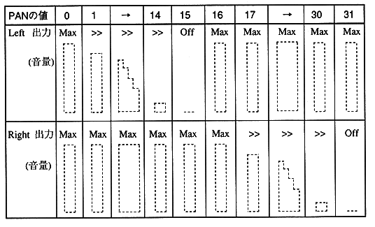

Title | Function | Function Name | No |
format void PCM_SetLoadNum (PcmHn pcm, Sint32 load_sct) Input pcm: Handle : load_sct: Maximum number of transfer sectors Output None Function value None Function Sets the maximum number of transfer sectors when transferring from CD buffer to library ring buffer . : The default is 20 sectors. Remarks Call this function before starting playback.
Title | Function | Function Name | No |
format void PCM_SetPan (PcmHn pcm, Sint32 pan) Input pcm: Handle pan: PAN value (0 to 31) Output None Function value None Function Specify the sound PAN. Default The default is 0. PAN settings are valid for monaural playback. Ignored for stereo playback.
